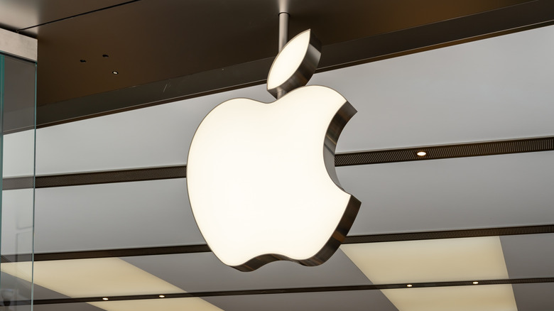
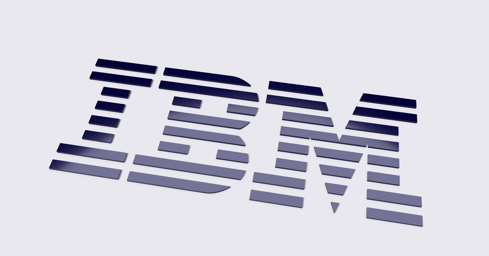

Seleziona un articolo per aprirlo in prima pagina a schermo intero.
Apple e l'Ambiente: le strategie per il futuro
Scopri gli obiettivi della multinazionale di Cupertino per raggiungere la neutralità carbonica entro il 2030.
Dell e la Sostenibilità: il piano d'azione
Analisi del piano globale "Progress Made Real" sviluppato per favorire il riciclo e l'economia circolare.
IBM e l'Informatica Verde nei data center
Come l'uso mirato dell'intelligenza artificiale e l'ottimizzazione delle risorse riducono i consumi elettrici.
Apple e l'Ambiente

Apple è una delle aziende tecnologiche più famose al mondo ed è molto impegnata a ridurre l'impatto ambientale dei suoi prodotti e delle sue attività.
Obiettivo emissioni zero:
Apple ha stabilito un obiettivo ambizioso: diventare completamente "carbon neutral" entro il 2030. Questo significa che ogni prodotto venduto, dalla produzione all'utilizzo, non avrà un impatto netto sul riscaldamento globale.
Uso di energie rinnovabili:
Tutti gli uffici, i negozi e i data center di Apple in tutto il mondo funzionano già al 100% con energia pulita, come l'energia solare e quella eolica. Inoltre, Apple sta aiutando i suoi fornitori a fare la stessa cosa.
Materiali riciclati e il robot Daisy:
Per evitare di estrarre nuove risorse dalla Terra, Apple usa sempre più materiali riciclati, come alluminio, oro e terre rare, per costruire i suoi dispositivi. Per fare questo, ha creato un robot speciale chiamato Daisy, capace di smontare gli iPhone usati per recuperare i materiali preziosi all'interno senza rovinarli.
Meno plastica nei pacchetti:
Apple ha ridotto quasi del tutto l'uso della plastica nelle sue confezioni, sostituendola con carta riciclata o fibra di legno proveniente da foreste gestite in modo responsabile. Inoltre, togliendo il caricabatterie dalle scatole degli iPhone, ha ridotto le dimensioni delle confezioni, permettendo di trasportare più telefoni contemporaneamente e riducendo l'inquinamento causato dai trasporti.
Dell e la Sostenibilità

Dell è un'azienda leader nella produzione di computer e server, e ha avviato un piano a lungo termine chiamato "Progress Made Real" per migliorare la sostenibilità.
Economia circolare e design per il riciclo:
Dell progetta i suoi computer pensando fin dall'inizio a come potranno essere riciclati. Molti dei suoi prodotti, come i computer portatili della linea XPS, contengono plastiche riciclate tratte da vecchi dispositivi elettronici o persino plastica raccolta dagli oceani prima che possa inquinare le spiagge.
Riduzione dei rifiuti elettronici (e-waste):
L'azienda offers programmi globali di ritiro dell'usato. Quando un cliente acquista un nuovo computer, Dell ritira quello vecchio (di qualsiasi marca) per riciclarne i componenti o rigenerarlo per una seconda vita.
Imballaggi ecologici:
Dell utilizza materiali innovativi e biodegradabili per proteggere i computer durante il trasporto, come il bambù riciclato o una speciale schiuma creata dai funghi, riducendo drasticamente l'uso del polistirolo.
Efficienza energetica:
I dispositivi Dell sono progettati per consumare sempre meno elettricità durante il loro utilizzo, aiutando sia l'ambiente sia i consumatori a risparmiare sulle bollette.
IBM e l'Informatica Verde

IBM (International Business Machines) è una delle più antiche aziende tecnologiche del mondo e si concentra sulla sostenibilità legata soprattutto ai grandi server e ai software aziendali.
Data Center efficienti:
I data center (i luoghi in cui si trovano migliaia di computer che fanno funzionare internet) consumano moltissima energia. IBM progetta sistemi di raffreddamento avanzati e utilizza l'intelligenza artificiale per regolare la temperatura dei server solo quando necessario, risparmiando enormi quantità di elettricità.
Tecnologia al servizio dell'ambiente:
IBM non si limita a ridurre il proprio impatto, ma crea software per aiutare altre aziende e scienziati a proteggere il pianeta. Ad esempio, i supercomputer IBM vengono usati per simulare i cambiamenti climatici, prevedere l'inquinamento dell'aria e ottimizzare l'uso dell'acqua nell'agricoltura.
Gestione del ciclo di vita dei server:
Poiché produce grandi computer industriali, IBM ha un centro specializzato nel ricondizionamento. Quasi il 95% dei server restituiti dai clienti viene riparato e rivenduto, oppure smontato per riciclare i metalli preziosi.
Riduzione delle emissioni:
IBM si è impegnata a raggiungere le emissioni nette di gas serra pari a zero entro il 2030, aumentando l'uso di elettricità proveniente da fonti rinnovabili per tutte le sue sedi mondiali.